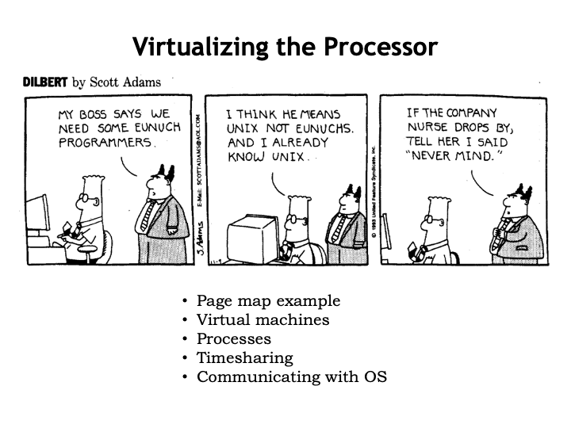
Review: Virtual Memory
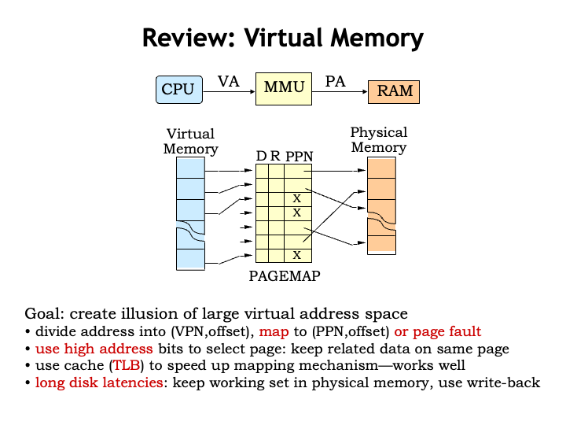
In the last lecture we introduced the notion of virtual memory and added a Memory Management Unit (MMU) to translate the virtual addresses generated by the CPU to the physical addresses sent to main memory. This gave us the ability to share physical memory between many running programs while still giving each program the illusion of having its own large address space.
Both the virtual and physical address spaces are divided into a sequence of pages, each holding some fixed number of locations. For example if each page holds $2^{12}$ bytes, a 32-bit address space would have $2^{32}/2^{12} = 2^{20}$ pages. In this example the 32-bit address can be thought of as having two fields: a 20-bit page number formed from the high-order address bits and a 12-bit page offset formed from the low-order address bits. This arrangement ensures that nearby data will be located on the same page.
The MMU translates virtual page numbers into physical page numbers using a page map. Conceptually the page map is an array where each entry in the array contains a physical page number along with a couple of bits indicating the page status. The translation process is simple: the virtual page number is used as an index into the array to fetch the corresponding physical page number. The physical page number is then combined with the page offset to form the complete physical address.
In the actual implementation the page map is usually organized into multiple levels, which permits us to have resident only the portion of the page map weʼre actively using. And to avoid the costs of accessing the page map on each address translation, we use a cache (called the translation look-aside buffer) to remember the results of recent VPN-to-PPN translations.
All allocated locations of each virtual address space can be found on secondary storage. Note that they may not necessarily be resident in main memory. If the CPU attempts to access a virtual address thatʼs not resident in main memory, a page fault is signaled and the operating system will arrange to move the desired page from second storage into main memory. In practice, only the active pages for each program are resident in main memory at any given time.
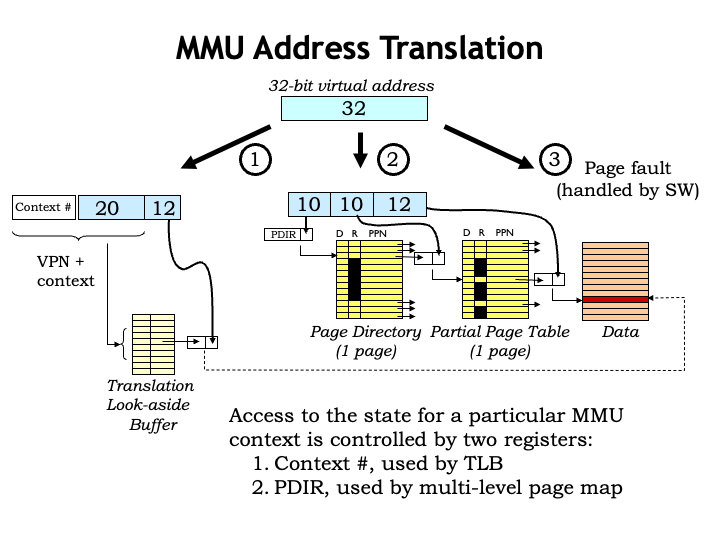
Hereʼs a diagram showing the translation process. First we check to see if the required VPN-to-PPN mapping is cached in the TLB. If not, we have to access the hierarchical page map to see if the page is resident and, if so, lookup its physical page number. If we discover that the page is not resident, a page fault exception is signaled to the CPU so that it can run a handler to load the page from secondary storage.
Note that access to a particular mapping context is controlled by two registers. The context-number register controls which mappings are accessible in the TLB. And the page-directory register indicates which physical page holds the top tier of the hierarchical page map. We can switch to another context by simply reloading these two registers.
To effectively accommodate multiple contexts weʼll need to have sufficient TLB capacity to simultaneously cache the most frequent mappings for all the processes. And weʼll need some number of physical pages to hold the required page directories and segments of the page tables. For example, for a particular process, three pages will suffice hold the resident two-level page map for 1024 pages at each end of the virtual address space, providing access to up to 8MB of code, stack, and heap, more than enough for many simple programs.
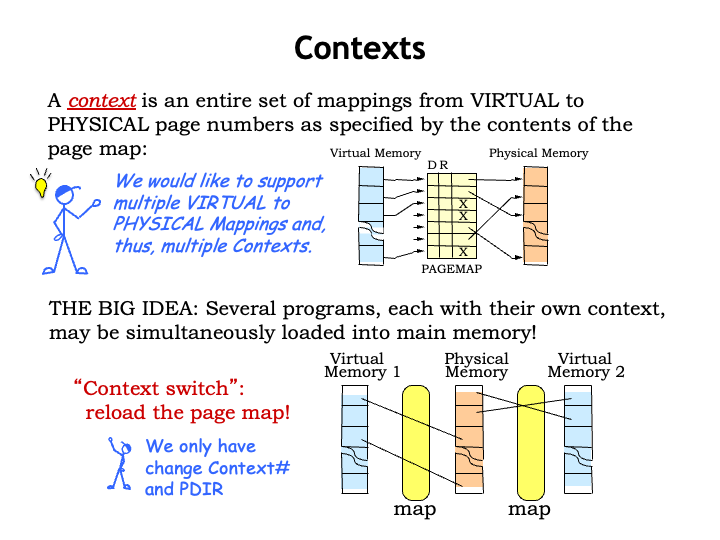
The page map creates the context needed to translate virtual addresses to physical addresses. In a computer system thatʼs working on multiple tasks at the same time, we would like to support multiple contexts and be able to quickly switch from one context to another.
Multiple contexts would allow us to share physical memory between multiple programs. Each program would have an independent virtual address space, e.g., two programs could both access virtual address 0 as the address of their first instruction and would end up accessing different physical locations in main memory. When switching between programs, weʼd perform a context switch to move to the appropriate MMU context.
The ability to share the CPU between many programs seems like a great idea! Letʼs figure out the details of how that might work...
Building a Virtual Machine
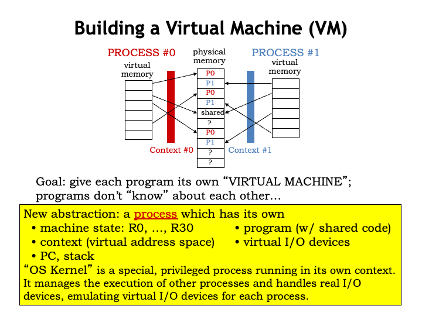
Letʼs create a new abstraction called a process to capture the notion of a running program. A process encompasses all the resources that would be used when running a program including those of the CPU, the MMU, input/output devices, etc. Each process has a state that captures everything we know about its execution.
The process state includes
- the hardware state of the CPU, i.e., the values in the registers and program counter.
- the contents of the processʼ virtual address space, including code, data values, the stack, and data objects dynamically allocated from the heap. Under the management of the MMU, this portion of the state can be resident in main memory or can reside in secondary storage.
- the hardware state of the MMU, which, as we saw earlier, depends on the context-number and page-directory registers. Also included are the pages allocated for the hierarchical page map.
- additional information about the processʼ input and output activities, such as where it has reached in reading or writing files in the file system, the status and buffers associated with open network connections, pending events from the user interface (e.g., keyboard characters and mouse clicks), and so on.
As weʼll see, there is a special, privileged process, called the operating system (OS), running in its own kernel-mode context. The OS manages all the bookkeeping for each process, arranging for the process run periodically. The OS will provide various services to the processes, such as accessing data in files, establishing network connections, managing the window system and user interface, and so on.
To switch from running one user-mode process to another, the OS will need to capture and save the *entire* state of the current user-mode process. Some of it already lives in main memory, so weʼre all set there. Some of it will be found in various kernel data structures. And some of it weʼll need to be able to save and restore from the various hardware resources in the CPU and MMU. In order to successfully implement processes, the OS must be able to make it seem as if each process was running on its own virtual machine that works independently of other virtual machines for other processes. Our goal is to efficiently share one physical machine between all the virtual machines.
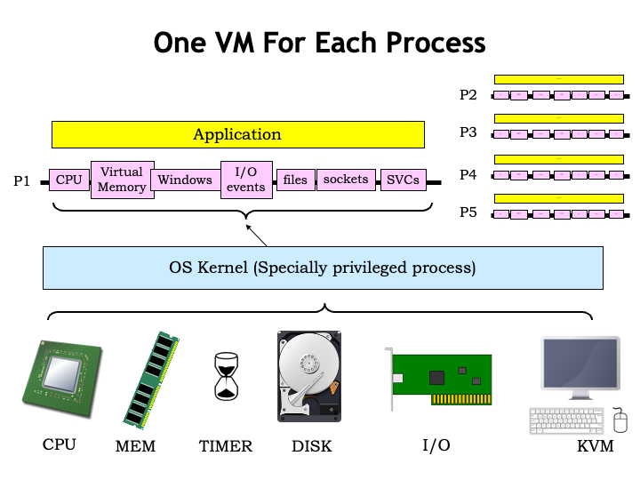
Hereʼs a sketch of the organization weʼre proposing. The resources provided by a physical machine are shown at the bottom of the slide. The CPU and main memory form the computation engine at heart of the system. Connected to the CPU are various peripherals, a collective noun coined from the English word “periphery” that indicates the resources surrounding the CPU.
A timer generates periodic CPU interrupts that can be used to trigger periodic actions.
Secondary storage provides high-capacity non-volatile memories for the system.
Connections to the outside world are important too. Many computers include USB connections for removable devices. And most provide wired or wireless network connections.
And finally there are usually video monitors, keyboards and mice that serve as the user interface. Cameras and microphones are becoming increasing important as the next generation of user interface.
The physical machine is managed by the OS running in the privileged kernel context. The OS handles the low-level interfaces to the peripherals, initializes and manages the MMU contexts, and so on. Itʼs the OS that creates the virtual machine seen by each process.
User-mode programs run directly on the physical processor, but their execution can be interrupted by the timer, giving the OS the opportunity to save away the current process state and move to running the next process. Via the MMU, the OS provides each process with an independent virtual address space thatʼs isolated from the actions of other processes.
The virtual peripherals provided by the OS isolate the process from all the details of sharing resources with other processes. The notion of a window allows the process to access a rectangular array of pixels without having to worry if some pixels in the window are hidden by other windows. Or worrying about how to ensure the mouse cursor always appears on top of whatever is being displayed, and so on. Instead of accessing I/O devices directly, each process has access to a stream of I/O events that are generated when a character is typed, the mouse is clicked, etc. For example, the OS deals with how to determine which typed characters belong to which process. In most window systems, the user clicks on a window to indicate that the process that owns the window now has the keyboard focus and should receive any subsequent typed characters. And the position of the mouse when clicked might determine which process receives the click. All of which is to say that the details of sharing have been abstracted out of the simple interface provided by the virtual peripherals.
The same is true of accessing files on disk. The OS provides the useful abstraction of having each file appear as a contiguous, growable array of bytes that supports read and write operations. The OS knows how the file is mapped to a pool of sectors on the disk and deals with bad sectors, reducing fragmentation, and improving throughput by doing read look-aheads and write behinds.
For networks, the OS provides access to an in-order stream of bytes to some remote socket. It implements the appropriate network protocols for packetizing the stream, addressing the packets, and dealing with dropped, damaged, or out-of-order packets.
To configure and control these virtual services, the process communicates with the OS using supervisor calls (SVCs), a type of controlled-access procedure call that invokes code in the OS kernel.
The details of the design and implementation of each virtual service are beyond the scope of this course. If youʼre interested, a course on operating systems will explore each of these topics in detail.
The OS provides an independent virtual machine for each process, periodically switching from running one process to running the next process.
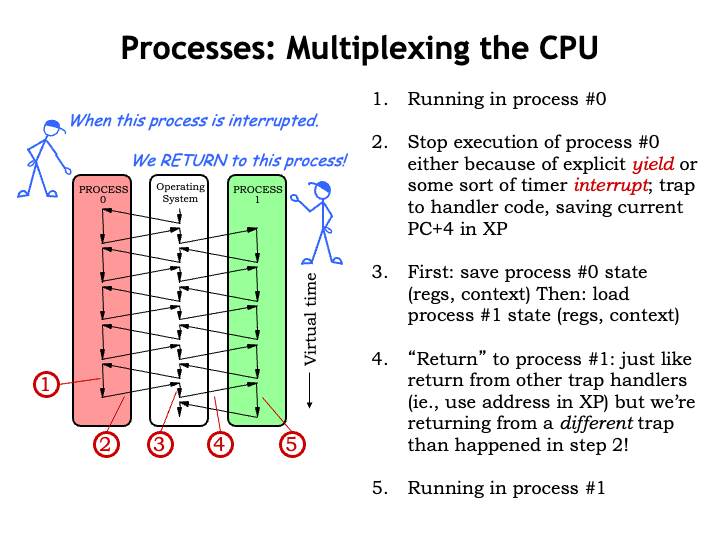
Letʼs follow along as we switch from running process #0 to running process #1.
Initially, the CPU is executing user-mode code in process #0. That execution is interrupted, either by an explicit yield by the program, or, more likely, by a timer interrupt. Either ends up transferring control to OS code running in kernel mode, while saving the current PC+4 value in the XP register. Weʼll talk about the interrupt mechanism in more detail in just a moment.
The OS saves the state of process #0 in the appropriate table in kernel storage. Then it reloads the state from the kernel table for process #1. Note that the process #1 state was saved when process #1 was interrupted at some earlier point.
The OS then uses a JMP() to resume user-mode execution using the newly restored process #1 state. Execution resumes in process #1 just where it was when interrupted earlier.
And now weʼre running the user-mode program in process #1.
Weʼve interrupted one process and resumed execution of another. Weʼll keep doing this in a round-robin fashion, giving each process a chance to run, before starting another round of execution.
The black arrows give a sense for how time proceeds. For each process, virtual time unfolds as a sequence of executed instructions. Unless it looks at a real-time clock, a process is unaware that occasionally its execution is suspended for a while. The suspension and resumption are completely transparent to a running process.
Of course, from the outside we can see that in real time, the execution path moves from process to process, visiting the OS during switches, producing the dove-tailed execution path we see here.
Time-multiplexing of the CPU is called timesharing and weʼll examine the implementation in more detail in the following segment.
Timesharing
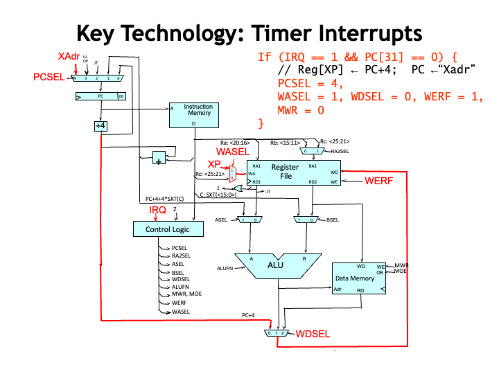
A key technology for timesharing is the periodic interrupt from the external timer device. Letʼs remind ourselves how the interrupt hardware in the Beta works.
External devices request an interrupt by asserting the Betaʼs interrupt request (IRQ) input. If the Beta is running in user mode, i.e., the supervisor bit stored in the PC is 0, asserting IRQ will trigger the following actions on the clock cycle the interrupt is recognized.
The goal is to save the current PC+4 value in the XP register and force the program counter (PC) to a particular kernel-mode instruction, which starts the execution of the interrupt handler code. The normal process of generating control signals based on the current instruction is superseded by forcing particular values for some of the control signals.
PCSEL is set to 4, which selects a specified kernel-mode address as the next value of the program counter. The address chosen depends on the type of external interrupt. In the case of the timer interrupt, the address is 0x80000008. Note that PC[31], the supervisor bit, is being set to 1 and the CPU will be in kernel-mode as it starts executing the code of the interrupt handler.
The WASEL, WDSEL, and WERF control signals are set so that PC+4 is written into the XP register (i.e., R30) in the register file.
And, finally, MWR is set to 0 to ensure that if weʼre interrupting a ST instruction that its execution is aborted correctly.
So in the next clock cycle, execution starts with the first instruction of the kernel-mode interrupt handler, which can find the PC+4 of the interrupted instruction in the XP register of the CPU.
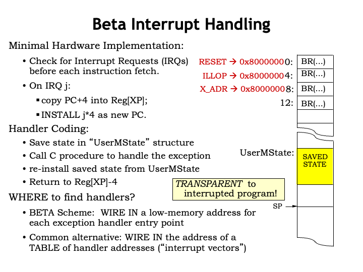
As we can see the interrupt hardware is pretty minimal: it saves the PC+4 of the interrupted user-mode program in the XP register and sets the program counter to some predetermined value that depends on which external interrupt happened.
The remainder of the work to handle the interrupt request is performed in software. The state of the interrupted process, e.g., the values in the CPU registers R0 through R30, is stored in main memory in an OS data structure called UserMState. Then the appropriate handler code, usually a procedure written in C, is invoked to do the heavy lifting. When that procedure returns, the process state is reloaded from UserMState. The OS subtracts 4 from the value in XP, making it point to the interrupted instruction and then resumes user-mode execution with a JMP(XP).
Note that in our simple Beta implementation the first instructions for the various interrupt handlers occupy consecutive locations in main memory. Since interrupt handlers are longer than one instruction, this first instruction is invariably a branch to the actual interrupt code. Here we see that the reset interrupt (asserted when the CPU first starts running) sets the PC to 0, the illegal instruction interrupt sets the PC to 4, the timer interrupt sets the PC to 8, and so on. In all cases, bit 31 of the new PC value is set to 1 so that handlers execute in supervisor or kernel mode, giving them access to the kernel context.
A common alternative is provide a table of new PC values at a known location and have the interrupt hardware access that table to fetch the PC for the appropriate handler routine. This provides the same functionality as our simple Beta implementation.
Since the process state is saved and restored during an interrupt, interrupts are transparent to the running user-mode program. In essence, we borrow a few CPU cycles to deal with the interrupt, then itʼs back to normal program execution.
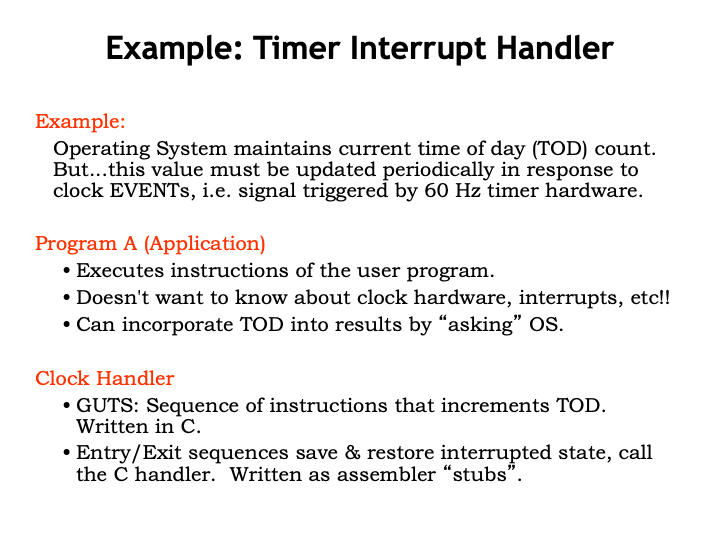
Hereʼs how the timer interrupt handler would work. Our initial goal is to use the timer interrupt to update a data value in the OS that records the current time of day (TOD). Letʼs assume the timer interrupt is triggered every 1/60th of a second.
A user-mode program executes normally, not needing to make any special provision to deal with timer interrupts. Periodically the timer interrupts the user-mode program to run the clock interrupt handler code in the OS, then resumes execution of the user-mode program. The program continues execution just as if the interrupt had not occurred. If the program needs access to the TOD, it makes the appropriate service request to the OS.
The clock handler code in the OS starts and ends with a small amount of assembly-language code to save and restore the state. In the middle, the assembly code makes a C procedure call to actually handle the interrupt.
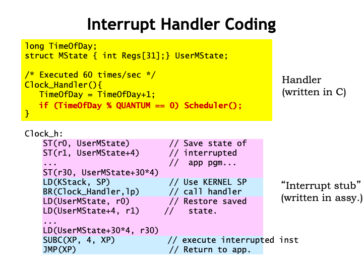
Hereʼs what the handler code might look like. In C, we find the declarations for the TOD data value and the structure, called UserMState, that temporarily holds the saved process state.
Thereʼs also the C procedure for incrementing the TOD value.
A timer interrupt executes the BR() instruction at location 8, which branches to the actual interrupt handler code at CLOCK\_H. The code first saves the values of all the CPU registers into the UserMState data structure. Note that we donʼt save the value of R31 since its value is always 0.
After setting up the kernel-mode stack, the assembly-language stub calls the C procedure above to do the hard work. When the procedure returns, the CPU registers are reloaded from the saved process state and the XP register value decremented by 4 so that it will point to the interrupted instruction. Then a JMP(XP) resumes user-mode execution.
Okay, that was simple enough. But what does this all have to do with timesharing - wasnʼt our goal to arrange to periodically switch which process was running?
Aha! We have code that runs on every timer interrupt, so letʼs modify it so that every so often we arrange to call the OSʼ Scheduler() routine. In this example, weʼd set the constant QUANTUM to 2 if we wanted to call Scheduler() every second timer interrupt.
The Scheduler() subroutine is where the time sharing magic happens!
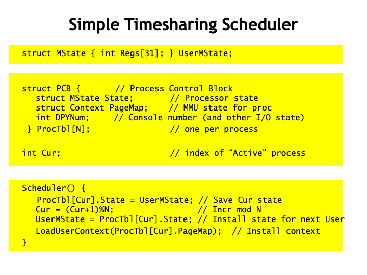
Here we see the UserMState data structure from the previous slide where the user-mode process state is stored during interrupts.
And hereʼs an array of process control block (PCB) data structures, one for each process in the system. The PCB holds the complete state of a process when some other process is currently executing - itʼs the long-term storage for processor state! As you can see, it includes a copy of MState with the processʼ register values, the MMU state, and various state associated with the processʼ input/output activities, represented here by a number indicating which virtual user-interface console is attached to the process.
There are N processes altogether. The variable CUR gives the index into ProcTable for the currently running process.
And hereʼs the surprisingly simple code for implementing timesharing. Whenever the Scheduler() routine is called, it starts by moving the temporary saved state into the PCB for the current process. It then increments CUR to move to the next process, making sure it wraps back around to 0 when weʼve just finished running the last of the N processes. It then loads reloads the temporary state from the PCB of the new process and sets up the MMU appropriately.
At this point Scheduler() returns and the clock interrupt handler reloads the CPU registers from the updated temporary saved state and resumes execution. Voila! Weʼre now running a new process...
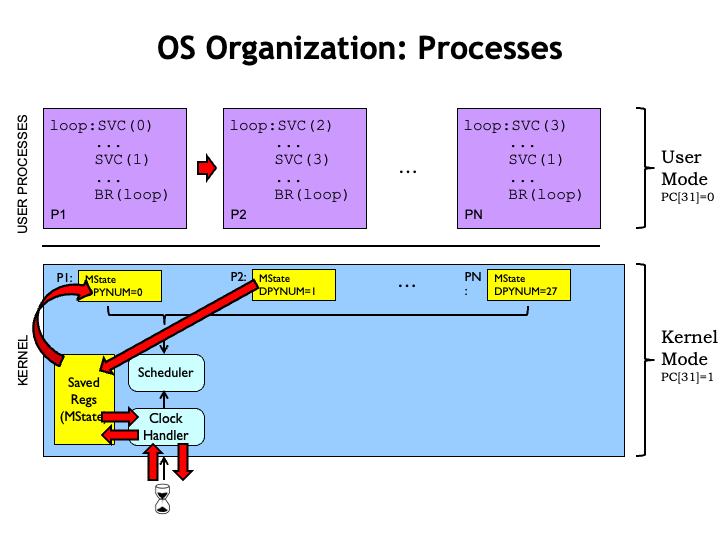
Letʼs use this diagram to once again walk through how time sharing works. At the top of the diagram youʼll see the code for the user-mode processes, and below the OS code along with its data structures.
The timer interrupts the currently running user-mode program and starts execution of the OSʼ clock handler code. The first thing the handler does is save all the registers into the UserMState data structure.
If the Scheduler() routine is called, it moves the temporarily saved state into the PCB, which provides the long-term storage for a processʼ state. Next Scheduler() copies the saved state for the next process into the temporary holding area. Then the clock handler reloads the updated state into the CPU registers and resumes execution, this time running code in the new process.
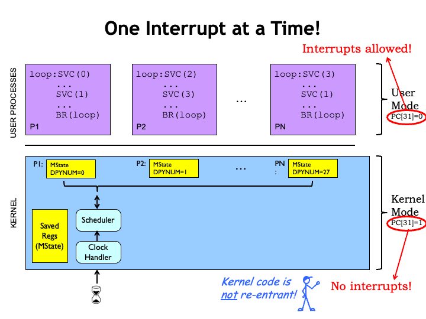
While weʼre looking at the OS, note that since its code runs with the supervisor mode bit set to 1, interrupts are disabled while in the OS. This prevents the awkward problem of getting a second interrupt while still in the middle of handling a first interrupt, a situation that might accidentally overwrite the state in UserMState. But that means one has to be very careful when writing OS code. Any sort of infinite loop can never be interrupted. You may have experienced this when your machine appears to freeze, accepting no inputs and just sitting there like a lump. At this point, your only choice is to power-cycle the hardware (the ultimate interrupt!) and start afresh.
Interrupts are allowed during execution of user-mode programs, so if they run amok and need to be interrupted, thatʼs always possible since the OS is still responding to, say, keyboard interrupts. Every OS has a magic combination of keystrokes that is guaranteed to suspend execution of the current process, sometimes arranging to make copy of the process state for later debugging. Very handy!
Handling Exceptions
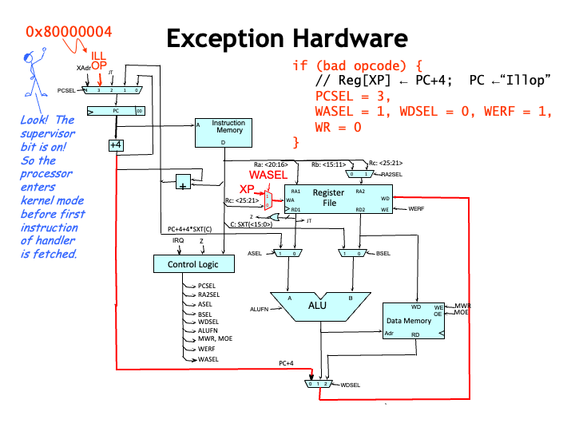
Another service provided by operating system is dealing properly with the attempt to execute instructions with “illegal” opcodes. Illegal is quotes because that just means opcodes whose operations arenʼt implemented directly by the hardware. As weʼll see, itʼs possible extend the functionality of the hardware via software emulation.
The action of the CPU upon encountering an illegal instruction (sometimes referred to as an unimplemented user operation or UUO) is very similar to how it processes interrupts. Think of illegal instructions as an interrupt caused directly by the CPU! As for interrupts, the execution of the current instruction is suspended and the control signals are set to values to capture PC+4 in the XP register and set the PC to, in this case, 0x80000004. Note that bit 31 of the new PC, aka the supervisor bit, is set to 1, meaning that the OS handler will have access to the kernel-mode context.
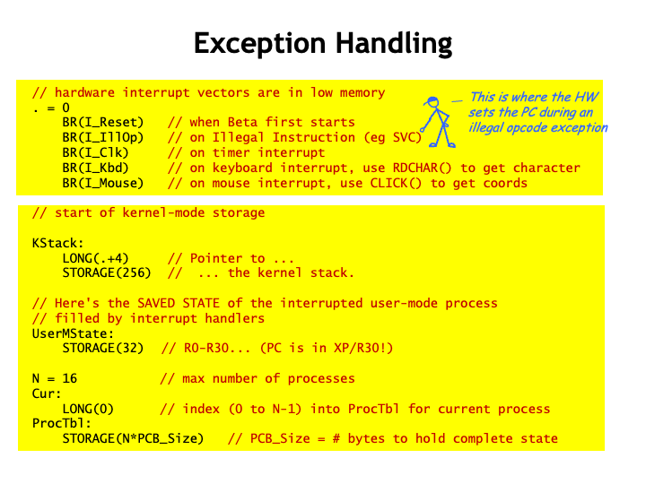
Hereʼs some code similar to that found in the Tiny Operating System (TinyOS), which youʼll be experimenting with in the final lab assignment. Letʼs do a quick walk-through of the code executed when an illegal instruction is executed. Starting at location 0, we see the branches to the handlers for the various interrupts and exceptions. In the case of an illegal instruction, the BR(I\_IllOp) in location 4 will be executed.
Immediately following is where the OS data structures are allocated. This includes space for the OS stack, UserMState where user-mode register values are stored during interrupts, and the process table, providing long-term storage for the complete state of each process while another process is executing.
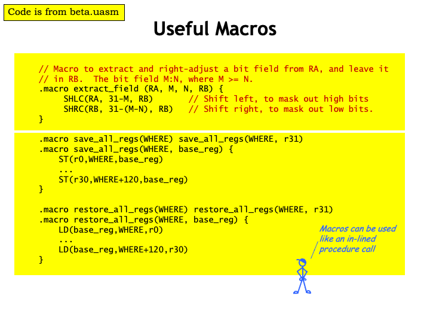
When writing in assembly language, itʼs convenient to define macros for operations that are used repeatedly. We can use a macro call whenever we want to perform the action and the assembler will insert the body of the macro in place of the macro call, performing a lexical substitution of the macroʼs arguments.
Hereʼs a macro for a two-instruction sequence that extracts a particular field of bits from a 32-bit value. M is the bit number of the left-most bit, N is bit number of the right-most bit. Bits are numbered 0 through 31, where bit 31 is the most-significant bit, i.e., the one at the left end of the 32-bit binary value.
And here are some macros that expand into instruction sequences that save and restore the CPU registers to or from the UserMState temporary storage area.
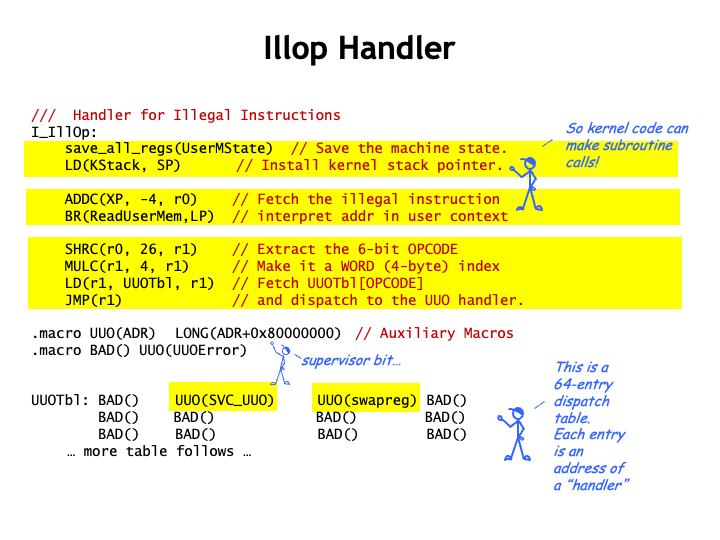
With those macros in hand, letʼs see how illegal opcodes are handled...
Like all interrupt handlers, the first action is to save the user-mode registers in the temporary storage area and initialize the OS stack.
Next, we fetch the illegal instruction from the user-mode program. Note that the saved PC+4 value is a virtual address in the context of the interrupted program. So weʼll need to use the MMU routines to compute the correct physical address - more about this on the next slide.
Then weʼll use the opcode of the illegal instruction as an index into a table of subroutine addresses, one for each of the 64 possible opcodes. Once we have the address of the handler for this particular illegal opcode, we JMP there to deal with the situation.
Selecting a destination from a table of addresses is called dispatching and the table is called the dispatch table. If the dispatch table contains many different entries, dispatching is much more efficient in time and space than a long series of compares and branches. In this case, the table is indicating that the handler for most illegal opcodes is the UUOError routine, so it might have smaller and faster simply to test for the two illegal opcodes the OS is going to emulate.
Illegal opcode 1 will be used to implement procedure calls from user-mode to the OS, which we call supervisor calls. More on this in the next segment.
As an example of having the OS emulate an instruction, weʼll use illegal opcode 2 as the opcode for the SWAPREG instruction, which weʼll discuss now.
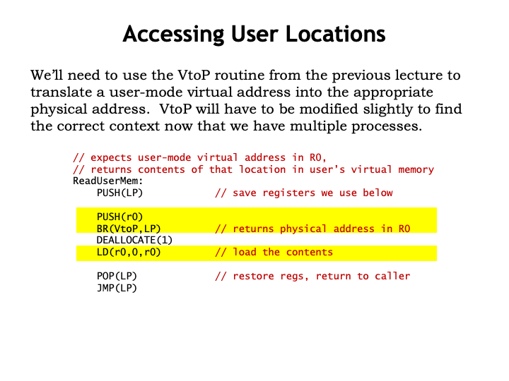
But first just a quick look at how the OS converts user-mode virtual addresses into physical addresses it can use. Weʼll build on the MMU VtoP procedure, described in the previous lecture. This procedure expects as its arguments the virtual page number and offset fields of the virtual address, so, following our convention for passing arguments to C procedures, these are pushed onto the stack in reverse order. The corresponding physical address is returned in R0.
We can then use the calculated physical address to read the desired location from physical memory.
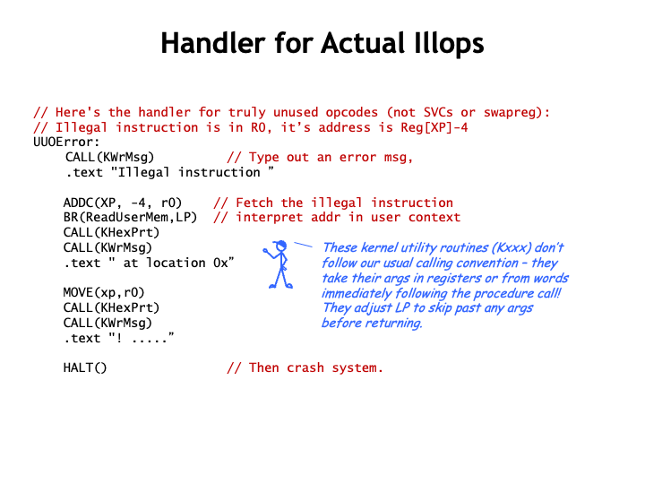
Okay, back to dealing with illegal opcodes. Hereʼs the handler for opcodes that are truly illegal. In this case the OS uses various kernel routines to print out a helpful error message on the userʼs console, then crashes the system! You may have seen these “blue screens of death” if you run the Windows operating system, full of cryptic hex numbers.
Actually, this wouldnʼt be the best approach to handling an illegal opcode in a userʼs program. In a real operating system, it would be better to save the state of the process in a special debugging file historically referred to as a core dump and then terminate this particular process, perhaps printing a short message on the userʼs console to let them know what happened. Then later the user could start a debugging program to examine the dump file to see where their bug is.
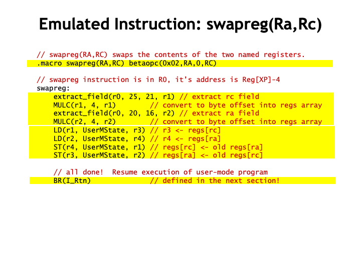
Finally, hereʼs the handler that will emulate the actions of the SWAPREG instruction, after which program execution will resume as if the instruction had been implemented in hardware. SWAPREG is an instruction that swaps the values in the two specified registers.
To define a new instruction, weʼd first have to let the assembler know to convert the swapreg(ra,rc) assembly language statement into binary. In this case weʼll use a binary format similar to the ADDC instruction, but setting the unused literal field to 0. The encoding for the RA and RC registers occur in their usual fields and the opcode field is set to 2.
Emulation is surprisingly simple. First we extract the RA and RC fields from the binary for the swapreg instruction and convert those values into the appropriate byte offsets for accessing the temporary array of saved register values.
Then we use RA and RC offsets to access the user-mode register values that have been saved in UserMState. Weʼll make the appropriate interchange, leaving the updated register values in UserMState, where theyʼll be loaded into the CPU registers upon returning from the illegal instruction interrupt handler.
Finally, weʼll branch to the kernel code that restores the process state and resumes execution. Weʼll see this code in the next segment.
Communicating with the OS
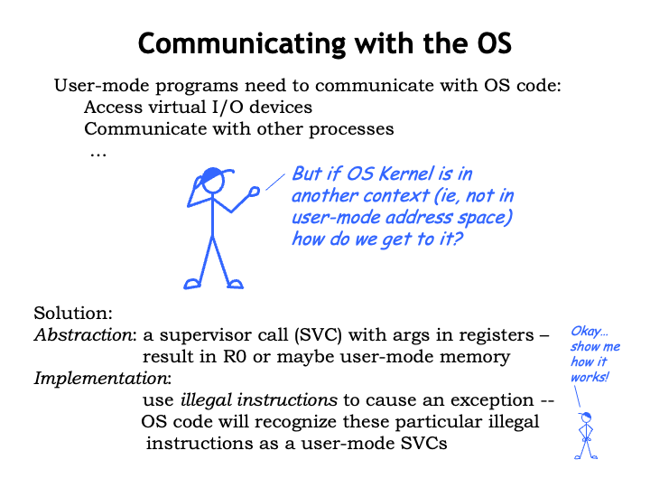
User-mode programs need to communicate with the OS to request service or get access to useful OS data like the time of day. But if theyʼre running in a different MMU context than the OS, they donʼt have direct access to OS code and data. And that might be bad idea in any case: the OS is usually responsible for implementing security and access policies and other users of the system would be upset if any random user program could circumvent those protections.
Whatʼs needed is the ability for user-mode programs to call OS code at specific entry points, using registers or the user-mode virtual memory to send or receive information. Weʼd use these supervisor calls to access a well-documented and secure OS application programming interface (API). An example of such an interface is POSIX, a standard interface implemented by many Unix-like operating systems.
As it turns out, we have a way of transferring control from a user-mode program to a specific OS handler - just execute an illegal instruction! Weʼll adopt the convention of using illegal instructions with an opcode field of 1 to serve as supervisor calls. The low order bits of these SVC instructions will contain an index indicating which SVC service weʼre trying to access.
Letʼs see how this would work.
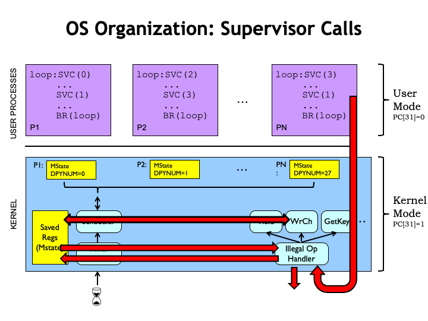
Hereʼs our user-mode/kernel-mode diagram again. Note that the user-mode programs contain supervisor calls with different indices, which when executed are intended to serve as requests for different OS services.
When an SVC instruction is executed, the hardware detects the opcode field of 1 as an illegal instruction and triggers an exception that runs the OS IllOp handler, as we saw in the previous segment.
The handler saves the process state in the temporary storage area, then dispatches to the appropriate handler based on the opcode field. This handler can access the userʼs registers in the temporary storage area, or using the appropriate OS subroutines can access the contents of any user-mode virtual address. If information is to be returned to the user, the return values can be stored in the temporary storage area, overwriting, say, the saved contents of the userʼs R0 register. Then, when the handler completes, the potentially-updated saved register values are reloaded into the CPU registers and execution of the user-mode program resumes at the instruction following the supervisor call.
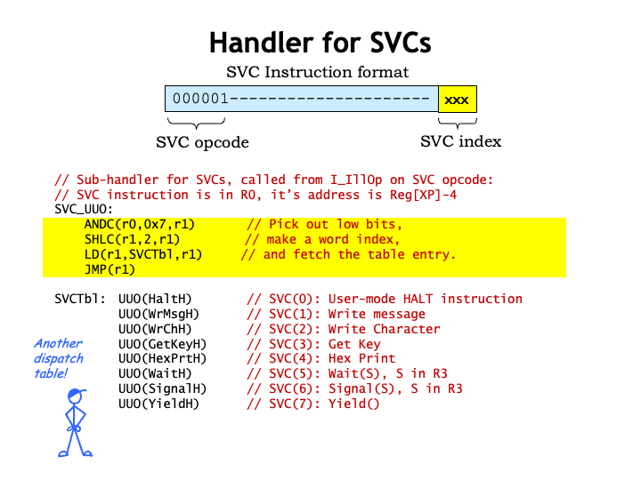
Earlier we saw how the illegal instruction handler uses a dispatch table to choose the appropriate sub-handler depending on the opcode field of the illegal instruction.
In this slide we see the sub-handler for SVC instructions, i.e., those with an opcode field of 1. This code uses the low-order bits of the instruction to access another dispatch table to select the appropriate code for each of the eight possible SVCs.
Our Tiny OS only has a meagre selection of simple services. A real OS would have SVCs for accessing files, dealing with network connections, managing virtual memory, spawning new processes, and so on.
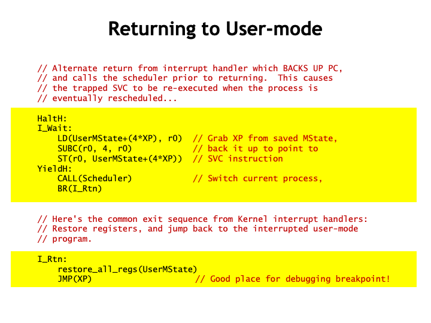
Hereʼs the code for resuming execution of the user-mode process when the SVC handler is done: simply restore the saved values for the registers and JMP to resume execution at the instruction following the SVC instruction.
There are times when for some reason the SVC request cannot not be completed and the request should be retried in the future. For example, the ReadCh SVC returns the next character typed by the user, but if no character has yet been typed, the OS cannot complete the request at this time. In this case, the SVC handler should branch to I\_Wait, which arranges for the SVC instruction to be re-executed next time this process runs and then calls Scheduler() to run the next process. This gives all the other processes a chance to run before the SVC is tried again, hopefully this time successfully.
You can see that this code also serves as the implementation for two different SVCs! A process can give up the remainder of its current execution time slice by calling the Yield() SVC. This simply causes the OS to call Scheduler(), suspending execution of the current process until its next turn in the round-robin scheduling process.
And to stop execution, a process can call the Halt() SVC. Looking at the implementation, we can see that “halt” is a bit of misnomer. What really happens is that the system arranges to re-execute the Halt() SVC each time the process is scheduled, which then causes the OS to schedule the next process for execution. The process appears to halt since the instruction following the Halt() SVC is never executed.
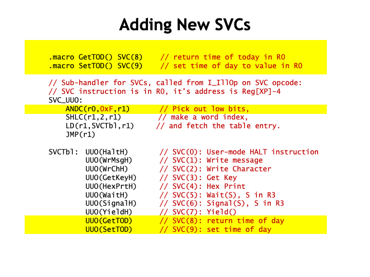
Adding new SVC handlers is straightforward.
First we need to define new SVC macros for use in user-mode programs. In this example, weʼre defining SVCs for getting and setting the time of day.
Since these are the eighth and ninth SVCs, we need to make a small adjustment to the SVC dispatch code and then add the appropriate entries to the end of the dispatch table.
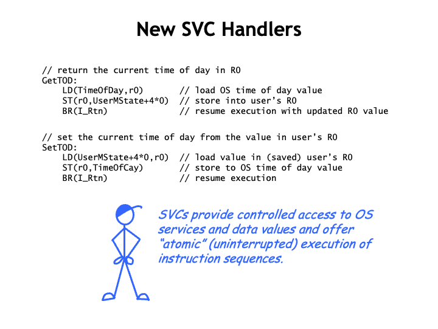
The code for the new handlers is equally straightforward. The handler can access the value of the programʼs R0 by looking at the correct entry in the UserMState temporary holding area. It just takes a few instructions to implement the desired operations.
The SVC mechanism provides controlled access to OS services and data. As weʼll see in a few lectures, itʼll be useful that SVC handlers canʼt be interrupted since they are running in supervisor mode where interrupts are disabled. So, for example, if we need to increment a value in main memory, using a LD/ADDC/ST sequence, but we want to ensure no other process execution intervenes between the LD and the ST, we can encapsulate the required functionality as an SVC, which is guaranteed to be uninterruptible.
Weʼve made an excellent start at exploring the implementation of a simple time-shared operating system. Weʼll continue the exploration in the next lecture when we see how the OS deals with external input/output devices.